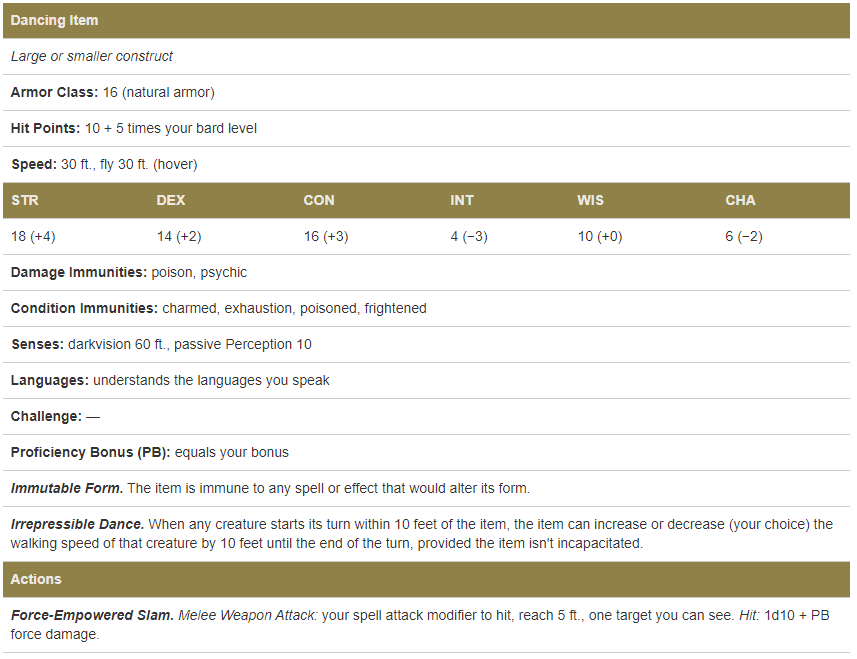

Bard
The Bard
| Level | Proficiency Bonus | Cantrips Known | Spells Known | 1st | 2nd | 3rd | 4th | 5th | 6th | 7th | 8th | 9th | Features |
|---|---|---|---|---|---|---|---|---|---|---|---|---|---|
| 1st | +2 | 2 | 4 | 2 | - | - | - | - | - | - | - | - | Spellcasting, Bardic Inspiration (d6) |
| 2nd | +2 | 2 | 5 | 3 | - | - | - | - | - | - | - | - | Jack of All Trades, Song of Rest (d6) |
| 3nd | +2 | 2 | 6 | 4 | 2 | - | - | - | - | - | - | - | Bard College, Expertise |
| 4th | +2 | 3 | 7 | 4 | 3 | - | - | - | - | - | - | - | Ability Score Improvement |
| 5th | +3 | 3 | 8 | 4 | 3 | 2 | - | - | - | - | - | - | Bardic Inspiration (d8), Font of Inspiration |
| 6th | +3 | 3 | 9 | 4 | 3 | 3 | - | - | - | - | - | - | Countercharm, Bard College feature |
| 7th | +3 | 3 | 10 | 4 | 3 | 3 | 1 | - | - | - | - | - | - |
| 8th | +3 | 3 | 11 | 4 | 3 | 3 | 2 | - | - | - | - | - | Ability Score Improvement |
| 9th | +4 | 3 | 12 | 4 | 3 | 3 | 3 | 1 | - | - | - | - | Song of Rest (d8) |
| 10th | +4 | 4 | 14 | 4 | 3 | 3 | 3 | 2 | - | - | - | - | Bardic Inspiration (d10), Expertise, Magical Secrets |
| 11th | +4 | 4 | 15 | 4 | 3 | 3 | 3 | 2 | 1 | - | - | - | - |
| 12th | +4 | 4 | 15 | 4 | 3 | 3 | 3 | 2 | 1 | - | - | - | Ability Score Improvement |
| 13th | +5 | 4 | 16 | 4 | 3 | 3 | 3 | 2 | 1 | 1 | - | - | Song of Rest (d10) |
| 14th | +5 | 4 | 18 | 4 | 3 | 3 | 3 | 2 | 1 | 1 | - | - | Magical Secrets, Bard College feature |
| 15th | +5 | 4 | 19 | 4 | 3 | 3 | 3 | 2 | 1 | 1 | 1 | - | Bardic Inspiration (d12) |
| 16th | +5 | 4 | 19 | 4 | 3 | 3 | 3 | 2 | 1 | 1 | 1 | - | Ability Score Improvement |
| 17th | +6 | 4 | 20 | 4 | 3 | 3 | 3 | 2 | 1 | 1 | 1 | 1 | Song of Rest (d12) |
| 18th | +6 | 4 | 22 | 4 | 3 | 3 | 3 | 3 | 1 | 1 | 1 | 1 | Magical Secrets |
| 19th | +6 | 4 | 22 | 4 | 3 | 3 | 3 | 3 | 2 | 1 | 1 | 1 | Ability Score Improvement |
| 20th | +6 | 4 | 22 | 4 | 3 | 3 | 3 | 3 | 2 | 2 | 1 | 1 | Superior Inspiration |
Class Features
As a bard, you gain the following class features.
Hit Points
Hit Dice: 1d8 per bard level
Hit Points at 1st Level: 8 + your Constitution modifier
Hit Points at Higher Levels: 1d8 (or 5) + your Constitution modifier per bard level after 1st
Proficiencies
Armor: Light armor
Weapons: Simple weapons, hand crossbows, longswords, rapiers, shortswords
Tools: Three musical instruments of your choice
Saving Throws: Dexterity, Charisma
Skills: Choose any three
Equipment
You start with the following equipment, in addition to the equipment granted by your background:
- (a) a rapier, (b) a longsword, or (c) any simple weapon
- (a) a diplomat’s pack or (b) an entertainer’s pack
- (a) a lute or (b) any other musical instrument
- Leather armor and a dagger
Spellcasting
You have learned to untangle and reshape the fabric of reality in harmony with your wishes and music. Your spells are part of your vast repertoire, magic that you can tune to different situations.
Cantrips
You know two cantrips of your choice from the bard spell list. You learn additional bard cantrips of your choice at higher levels, as shown in the Cantrips Known column of the Bard table.
Spell Slots
The Bard table shows how many spell slots you have to cast your spells of 1st level and higher. To cast one of these spells, you must expend a slot of the spell’s level or higher. You regain all expended spell slots when you finish a long rest.
For example, if you know the 1st-level spell cure wounds and have a 1st-level and a 2nd-level spell slot available, you can cast cure wounds using either slot.
Spells Known of 1st Level and Higher
You know four 1st-level spells of your choice from the bard spell list.
The Spells Known column of the Bard table shows when you learn more bard spells of your choice. Each of these spells must be of a level for which you have spell slots, as shown on the table. For instance, when you reach 3rd level in this class, you can learn one new spell of 1st or 2nd level.
Additionally, when you gain a level in this class, you can choose one of the bard spells you know and replace it with another spell from the bard spell list, which also must be of a level for which you have spell slots.
Spellcasting Ability
Charisma is your spellcasting ability for your bard spells. Your magic comes from the heart and soul you pour into the performance of your music or oration. You use your Charisma whenever a spell refers to your spellcasting ability. In addition, you use your Charisma modifier when setting the saving throw DC for a bard spell you cast and when making an attack roll with one.
Spell save DC = 8 + your proficiency bonus + your Charisma modifier
Spell attack modifier = your proficiency bonus + your Charisma modifier
Ritual Casting
You can cast any bard spell you know as a ritual if that spell has the ritual tag.
Spellcasting Focus
You can use a musical instrument as a spellcasting focus for your bard spells.
Bardic Inspiration
You can inspire others through stirring words or music. To do so, you use a bonus action on your turn to choose one creature other than yourself within 60 feet of you who can hear you. That creature gains one Bardic Inspiration die, a d6.
Once within the next 10 minutes, the creature can roll the die and add the number rolled to one ability check, attack roll, or saving throw it makes. The creature can wait until after it rolls the d20 before deciding to use the Bardic Inspiration die, but must decide before the GM says whether the roll succeeds or fails. Once the Bardic Inspiration die is rolled, it is lost. A creature can have only one Bardic Inspiration die at a time.
You can use this feature a number of times equal to your Charisma modifier (a minimum of once). You regain any expended uses when you finish a long rest.
Your Bardic Inspiration die changes when you reach certain levels in this class. The die becomes a d8 at 5th level, a d10 at 10th level, and a d12 at 15th level.
Jack of All Trades
Starting at 2nd level, you can add half your proficiency bonus, rounded down, to any ability check you make that doesn’t already include your proficiency bonus.
Song of Rest
Beginning at 2nd level, you can use soothing music or oration to help revitalize your wounded allies during a short rest. If you or any friendly creatures who can hear your performance regain hit points at the end of the short rest by spending one or more Hit Dice, each of those creatures regains an extra 1d6 hit points.
The extra hit points increase when you reach certain levels in this class: to 1d8 at 9th level, to 1d10 at 13th level, and to 1d12 at 17th level.
Bard College
At 3rd level, you delve into the advanced techniques of a bard college of your choice: the College of Lore or the College of Valor, both detailed at the end of the class description. Your choice grants you features at 3rd level and again at 6th and 14th level.
Expertise
At 3rd level, choose two of your skill proficiencies. Your proficiency bonus is doubled for any ability check you make that uses either of the chosen proficiencies. At 10th level, you can choose another two skill proficiencies to gain this benefit.
Ability Score Improvement
When you reach 4th level, and again at 8th, 12th, 16th, and 19th level, you can increase one ability score of your choice by 2, or you can increase two ability scores of your choice by 1. As normal, you can’t increase an ability score above 20 using this feature.
Font of Inspiration
Beginning when you reach 5th level, you regain all of your expended uses of Bardic Inspiration when you finish a short or long rest.
Countercharm
At 6th level, you gain the ability to use musical notes or words of power to disrupt mind-influencing effects. As an action, you can start a performance that lasts until the end of your next turn. During that time, you and any friendly creatures within 30 feet of you have advantage on saving throws against being frightened or charmed. A creature must be able to hear you to gain this benefit. The performance ends early if you are incapacitated or silenced or if you voluntarily end it (no action required).
Magical Secrets
By 10th level, you have plundered magical knowledge from a wide spectrum of disciplines. Choose two spells from any class, including this one. A spell you choose must be of a level you can cast, as shown on the Bard table, or a cantrip.
The chosen spells count as bard spells for you and are included in the number in the Spells Known column of the Bard table.
You learn two additional spells from any class at 14th level and again at 18th level.
Superior Inspiration
At 20th level, when you roll initiative and have no uses of Bardic Inspiration left, you regain one use.
Subclasses
College of Creation
Bards believe the cosmos is a work of art - the creation of the first dragons and gods. That creative work included harmonies that continue to resound through existence today, a power known as the Song of Creation. The bards of the College of Creation draw on that primeval song through dance, music, and poetry, and their teachers share this lesson: "Before the sun and the moon, there was the Song, and its music awoke the first dawn. Its melodies so delighted the stones and trees that some of them gained a voice of their own. And now they sing too. Learn the Song, students, and you too can teach the mountains to sing and dance."
Note of Potential
When you join the College of Creation at 3rd level, whenever you give a creature a Bardic Inspiration die, you can utter a note from the Song of Creation to create a Tiny mote of potential, which orbits within 5 feet of that creature. The mote is intangible and invulnerable, and it lasts until the Bardic Inspiration die is lost. The mote looks like a musical note, a star, a flower, or another symbol of art or life that you choose.
When the creature uses the Bardic Inspiration die, the mote provides an additional effect based on whether the die benefits an ability check, an attack roll, or a saving throw, as detailed below:
Ability Check. When the creature rolls the Bardic Inspiration die to add it to an ability check, the creature can roll the Bardic Inspiration die again and choose which roll to use, as the mote pops and emits colorful, harmless sparks for a moment.
Attack Roll. Immediately after the creature rolls the Bardic Inspiration die to add it to an attack roll against a target, the mote thunderously shatters. The target and each creature of your choice that you can see within 5 feet of it must succeed on a Constitution saving throw against your spell save DC or take thunder damage equal to the number rolled on the Bardic Inspiration die.
Saving Throw. Immediately after the creature rolls the Bardic Inspiration die and adds it to a saving throw, the mote vanishes with the sound of soft music, causing the creature to gain temporary hit points equal to the number rolled on the Bardic Inspiration die plus your Charisma modifier (minimum of 1 temporary hit point).
Performance of Creation
Also at 3rd level, as an action, you can channel the magic of the Song of Creation to create one nonmagical item of your choice in an unoccupied space within 10 feet of you. The item must appear on a surface or in a liquid that can support it. The gp value of the item can't be more than 20 times your bard level, and the item must be Medium or smaller. The item glimmers softly, and a creature can faintly hear music when touching it. The created item disappears after a number of hours equal to your proficiency bonus. For examples of items you can create, see the equipment chapter of the Player's Handbook.
Once you create an item with this feature, you can't do so again until you finish a long rest, unless you expend a spell slot of 2nd level or higher to use this feature again. You can have only one item created by this feature at a time; if you use this action and already have an item from this feature, the first one immediately vanishes.
The size of the item you can create with this feature increases by one size category when you reach 6th level (Large) and 14th level (Huge).
Animating Performance
By 6th level, as an action, you can target a Large or smaller nonmagical item you can see within 30 feet of you and animate it. The animate item uses the Dancing Item stat block, which uses your proficiency bonus (PB), The item is friendly to you and your companions and obeys your commands. It lives for 1 hour, until it is reduced to 0 hit points, or until you die.
In combat, the item shares your initiative count, but it takes its turn immediately after yours. It can move and use its reaction on its own, but the only action it takes on its turn is the Dodge action, unless you take a bonus action on your turn to command it to take another action. That action can be one in its stat block or some other action. If you are incapacitated, the item can take any action of its choice, not just Dodge.
When you use your Bardic Inspiration feature, you can command the item as part of the same bonus action you use for Bardic Inspiration.
Once you animate an item with this feature, you can't do so again until you finish a long rest, unless you expend a spell slot of 3rd level or higher to use this feature again. You can have only one item animated by this feature at a time; if you use this action and already have a dancing item from this feature, the first one immediately becomes inanimate.

Creative Crescendo
At 14th level, when you use your Performance of Creation feature, you can create more than one item at once. The number of items equals your Charisma modifier (minimum of two items). If you create an item that would exceed that number, you choose which of the previously created items disappears. Only one of these items can be of the maximum size you can create; the rest must be Small or Tiny.
You are no longer limited by gp value when creating items with Performance of Creation.
College of Eloquence
Adherents of the College of Eloquence master the art of oratory. Persuasion is regarded as a high art, and a well-reasoned, well-spoken argument often proves more powerful than objective truth. These bards wield a blend of logic and theatrical wordplay, winning over skeptics and detractors with logical arguments, and plucking at heartstrings to appeal to the emotions of entire audiences.
Silver Tongue
Starting at 3rd level, you are a master at saying the right thing at the right time. When you make a Charisma (Persuasion) or Charisma (Deception) check, you can treat a d20 roll of 9 or lower as a 10. This ability is available at the DM's discretion when the player character speaks eloquently.
Unsettling Words
Also at 3rd level, you can spin words laced with magic that unsettle a creature and cause it to doubt itself. As a bonus action, you can expend one use of your Bardic Inspiration and choose one creature you can see within 60 feet of you. Roll the Bardic Inspiration die. The creature must subtract the number rolled from the next saving throw it makes before the start of your next turn.
Unfailing Inspiration
At 6th level, your inspiring words are so persuasive that others feel driven to succeed. When a creature adds one of your Bardic Inspiration dice to its ability check, attack roll, or saving throw and the roll fails, the creature can keep the Bardic Inspiration die.
Universal Speech
Also at 6th level, you have gained the ability to make your speech intelligible to any creature. As an action, choose one or more creatures within 60 feet of you, up to a number equal to your Charisma modifier (minimum of one creature). The chosen creatures can magically understand you, regardless of the language you speak, for 1 hour.
Once you use this feature, you can't use it again until you finish a long rest, unless you expend a spell slot to use it again.
Infectious Inspiration
At 14th level, when you successfully inspire someone, the power of your eloquence can now spread to someone else. When a creature within 60 feet of you adds one of your Bardic Inspiration dice to its ability check, attack roll, or saving throw and the roll succeeds, you can use your reaction to encourage a different creature (other than yourself) that can hear you within 60 feet of you, giving it a Bardic Inspiration die without expending any of your Bardic Inspiration uses.
You can use this reaction a number of times equal to your Charisma modifier (minimum of once), and you regain all expended uses when you finish a long rest.
College of Glamour
The bards of this college are regarded with a mixture of awe and fear. Their performances are the stuff of legend. These bards are so eloquent that a speech or song that one of them performs can cause captors to release the bard unharmed and can lull a furious dragon into complacency. The same magic that allows them to quell beasts can also bend minds. Villainous bards of this college can leech off a community for weeks, abusing their magic to turn their hosts into thralls. Heroic bards of this college instead use this power to gladded the downtrodden and undermine oppressors.
Mantle of Inspiration
When you join the College of Glamour at 3rd level, you gain the abilty to weave a song of fey magic that imbues your allies with vigor and speed.
As a bonus action, you can expend one use of your Bardic inspiration to grant yourself a wondrous appearance. When you do so, choose a number of creatures you can see and who can see you within 60 feet of you, up to a number equal to your Charisma modifier (minimum of one). Each of them gains 5 temporary hit points. When a creature gains these temporary hit points, it can immediately use its reaction to move up to its speed, without provoking opportunity attacks.
The number of temporary hit points increases when you reach certain levels in this class, increasing to 8 at 5th level, 11 at 10th level, and 14 at 15th level.
Enthralling Performance
Starting at 3rd level, you can charge your performance with seductive magics.
If you perform for at least 1 minute, you can attempt to inspire wonder in your audience by singing, reciting a poem, or dancing, At the end of the performance, choose a number of humanoids within 60 feet of you who watched and listened to all of it, up to a number equal to your Charisma modifier (minimum of one). Each target must succeed on a Wisdom saving throw against your spell save DC or be charmed by you. While charmed in this way, the target idolizes you, it speaks glowingly of you to anyone who speaks to it, and it hinders anyone who opposes you, avoiding violence unless it was already inclined to fight on your behalf. This effects ends on a target after 1 hour, if it takes any damage, if you attack it, or if it witnesses you attacking or damaging any of its allies.
If a target succeeds on its saving throw, the target has no hint that you tried to charm it.
Once you use this feature, you can't use it again until you finish a short or long rest.
Mantle of Majesty
At 6th level, you gain the ability to cloak yourself in a magic that makes others want to serve you. As a bonus action, you cast Command without expending a spell slot, and you take on an appearance of unearthly beauty for 1 minute or until your concentration ends (as if you were concentrating on a spell). During this time, you can cast Command as a bonus action on each of your turns, without expending a spell slot.
Any creature charmed by you automatically fails its saving throw against the Command you cast with this feature.
Once you use this feature, you can't use it again until you finish a long rest.
Unbreakable Majesty
At 14th level, your appearance permanently gains an otherworldly aspect that makes you look more lovely and fierce.
In addition, as a bonus action, you can assume a magically majestic presence for 1 minute or until you are incapacitated. For the duration, whenever any creature tries to attack you for the first time on a turn, the attacker must make a Charisma saving throw against your spell save DC. On a failed save, it can't attack you on this turn, and it must choose a new target for its attack or the attack is wasted. On a successful save, it can attack you on this turn, but it has disadvantage on any saving throw it makes against your spells on your next turn.
Once you assume this majestic presence, you can't do so again until you finish a short or long rest.
College of Lore
Bards of the College of Lore know something about most things, collecting bits of knowledge from sources as diverse as scholarly tomes and peasant tales. Whether singing folk ballads in taverns or elaborate compositions in royal courts, these bards use their gifts to hold audiences spellbound. When the applause dies down, the audience members might find themselves questioning everything they held to be true, from their faith in the priesthood of the local temple to their loyalty to the king.
The loyalty of these bards lies in the pursuit of beauty and truth, not in fealty to a monarch or following the tenets of a deity. A noble who keeps such a bard as a herald or advisor knows that the bard would rather be honest than politic.
The college's members gather in libraries and sometimes in actual colleges, complete with classrooms and dormitories, to share their lore with one another. They also meet at festivals or affairs of state, where they can expose corruption, unravel lies, and poke fun at self-important figures of authority.
Bonus Proficiencies
When you join the College of Lore at 3rd level, you gain proficiency with three skills of your choice.
Cutting Words
Also at 3rd level, you learn how to use your wit to distract, confuse, and otherwise sap the confidence and competence of others. When a creature that you can see within 60 feet of you makes an attack roll, an ability check, or a damage roll, you can use your reaction to expend one of your uses of Bardic Inspiration, rolling a Bardic Inspiration die and subtracting the number rolled from the creature's roll. You can choose to use this feature after the creature makes its roll, but before the GM determines whether the attack roll or ability check succeeds or fails, or before the creature deals its damage. The creature is immune if it can't hear you or if it's immune to being charmed.
Additional Magical Secrets
At 6th level, you learn two spells of your choice from any class. A spell you choose must be of a level you can cast, as shown on the Bard table, or a cantrip. The chosen spells count as bard spells for you but don't count against the number of bard spells you know.
Peerless Skill
Starting at 14th level, when you make an ability check, you can expend one use of Bardic Inspiration. Roll a Bardic Inspiration die and add the number rolled to your ability check. You can choose to do so after you roll the die for the ability check, but before the GM tells you whether you succeed or fail.
College of Swords
Bards of the College of Swords are called blades, and they entertain through daring feats of weapon prowess. Blades perform stunts such as sword swallowing, knife throwing and juggling, and mock combats. Though they use their weapons to entertain, they are also highly trained and skilled warriors in their own right.
Their talent with weapons inspires many blades to lead double lives. One blade might use a circus troupe as cover for nefarious deeds such as assassination, robbery, and blackmail. Other blades strike at the wicked, bringing justice to bear against the cruel and powerful. Most troupes are happy to accept a blade's talent for the excitement it adds to a performance, but few entertainers fully trust a blade in their ranks.
Blades who abandon their lives as entertainers have often run into trouble that makes maintaining their secret activities impossible. A blade caught stealing or engaging in vigilante justice is too great a liability for most troupes. With their weapon skills and magic, these blades either take up work as enforcers for thieves' guilds or strike out on their own as adventurers.
Bonus Proficiencies
When you join the College of Swords at 3rd level, you gain proficiency with medium armor and the scimitar.
If you're proficient with a simple or martial melee weapon, you can use it as a spellcasting focus for your bard spells.
Fighting Style
At 3rd level, you adopt a particular style of fighting as your specialty. Choose one of the following options. You can't take a Fighting style option more than once, even if you later get to choose again.
- Dueling. When you are wielding a melee weapon in one hand and no other weapons, you gain a +2 bonus to damage rolls with that weapon.
- Two-Weapon Fighting. When you engage in two-weapon fighting, you can add your ability modifier to the damage of the second attack.
Blade Flourish
At 3rd level, you learn to conduct impressive displays of martial prowess and speed.
Whenever you take the Attack action on your turn, your walking speed increases by 10 feet until the end of your turn, and if a weapon attack that you make as part of this action hits a creature, you can use one of the following Blade Flourish options of your choice. You can only use one Blade Flourish option per turn.
- Defensive Flourish. You can expend one use of your Bardic inspiration to cause the weapon to deal extra damage to the target you hit. The damage equals the number you roll on the Bardic Inspiration die. You also add the number rolled to your AC until the start of your next turn.
- Slashing Flourish. You can expend one use of your Bardic Inspiration to cause the weapon to deal extra damage to the target you hit and to any other creature of your choice that you can see within 5 feet of you. The damage equals the number you roll on the Bardic Inspiration die.
- Mobile Flourish. You can expend one use of your Bardic Inspiration to cause the weapon to deal extra damage to the target you hit. The damage equals the number you roll on the Bardic Inspiration die. You can also push the target up to 5 feet again from you, plus a number of feet equal to the number you roll on that die. You can then immediately use your reaction to move up to your walking speed to an unoccupied space within 5 feet of the target.
Extra Attack
Starting at 6th level, you can attack twice, instead of once, whenever you take the Attack action on your turn.
Master's Flourish
Starting at 14th level, whenever you use a Blade Flourish option, you can roll a d6 and use it instead of expending a Bardic Inspiration die.
College of Valor
Bards of the College of Valor are daring skalds whose tales keep alive the memory of the great heroes of the past, and thereby inspire a new generation of heroes. These bards gather in mead halls or around great bonfires to sing the deeds of the mighty, both past and present. They travel the land to witness great events firsthand and to ensure that the memory of those events doesn't pass from the world. With their songs, they inspire others to reach the same heights of accomplishment as the heroes of old.
Bonus Proficiencies
When you join the College of Valor at 3rd level, you gain proficiency with medium armor, shields, and martial weapons.
Combat Inspiration
Also at 3rd level, you learn to inspire others in battle. A creature that has a Bardic Inspiration die from you can roll that die and add the number rolled to a weapon damage roll it just made. Alternatively, when an attack roll is made against the creature, it can use its reaction to roll the Bardic Inspiration die and add the number rolled to its AC against that attack, after seeing the roll but before knowing whether it hits or misses.
Extra Attack
Starting at 6th level, you can attack twice, instead of once, whenever you take the Attack action on your turn.
Battle Magic
At 14th level, you have mastered the art of weaving spellcasting and weapon use into a single harmonious act. When you use your action to cast a bard spell, you can make one weapon attack as a bonus action.
College of Whispers
Most folk are happy to welcome a bard into their midst. Bards of the College of Whispers use this to their advantage. They appear to be like any other bard, sharing news, singing songs, and telling tales to the audiences they gather. In truth, the College of Whispers teaches its students that they are wolves among sheep. These bards use their knowledge and magic to uncover secrets and turn them against others through extortion and threats.
Many other bards hate the College of Whispers, viewing it as a parasite that uses the bards’ reputation to acquire wealth and power. For this reason, these bards rarely reveal their true nature unless they must. They typically claim to follow some other college, or keep their true nature secret in order to better infiltrate and exploit royal courts and other settings of power.
Psychic Blades
When you join the College of Whispers at 3rd level, you gain the ability to make your weapon attacks magically toxic to a creature's mind.
When you hit a creature with a weapon attack, you can expend one use of your Bardic Inspiration to deal an additional 2d6 psychic damage to that target. You can do so only once per round on your turn.
The psychic damage increases when you reach certain levels in this class, increasing to 3d6 at 5th level, 5d6 at 10th level, and 8d6 at 15th level.
Words of Terror
At 3rd level, you learn to infuse innocent-seeming words with an insidious magic that can inspire terror.
If you speak to a humanoid alone for at least 1 minute, you can attempt to seed paranoia and fear into its mind. At the end of the conversation, the target must succeed on a Wisdom saving throw against your spell save DC or be frightened of you or another creature of your choice. The target is frightened in this way for 1 hour, until it is attacked or damaged, or until it witnesses its allies being attacked or damaged.
If the target succeeds on its saving throw, the target has no hint that you tried to frighten it.
Once you use this feature, you can’t use it again until you finish a short rest or long rest.
Mantle of Whispers
At 6th level, you gain the ability to adopt a humanoid's persona. When a humanoid dies within 30 feet of you, you can magically capture its shadow using your reaction. You retain this shadow until you use it or you finish a long rest.
You can use the shadow as an action. When you do so, it vanishes, magically transforming into a disguise that appears on you. You now look like the dead person, but healthy and alive. This disguise lasts for 1 hour or until you end it as a bonus action.
While you're in the disguise, you gain access to all information that the humanoid would freely share with a casual acquaintance. Such information includes general details on its background and personal life, but doesn't include secrets. The information is enough that you can pass yourself off as the person by drawing on its memories.
Another creature can see through this disguise by succeeding on a Wisdom (Insight) check contested by your Charisma (Deception) check. You gain a +5 bonus to your check.
Once you capture a shadow with this feature, you can't capture another one with it until you finish a short or long rest.
Shadow Lore
At 14th level, you gain the ability to weave dark magic into your words and tap into a creature’s deepest fears.
As an action, you magically whisper a phrase that only one creature of your choice within 30 feet of you can hear. The target must make a Wisdom saving throw against your spell save DC. It automatically succeeds if it doesn’t share a language with you or if it can’t hear you. On a successful saving throw, your whisper sounds like unintelligible mumbling and has no effect.
If the target fails its saving throw, it is charmed by you for the next 8 hours or until you or your allies attack or damage it. It interprets the whispers as a description of its most mortifying secret.
While you gain no knowledge of this secret, the target is convinced you know it. While charmed in this way, the creature obeys your commands for fear that you will reveal its secret. It won’t risk its life for you or fight for you, unless it was already inclined to do so. It grants you favors and gifts it would offer to a close friend.
When the effect ends, the creature has no understanding of why it held you in such fear.
Once you use this feature, you can’t use it again until you finish a long rest.